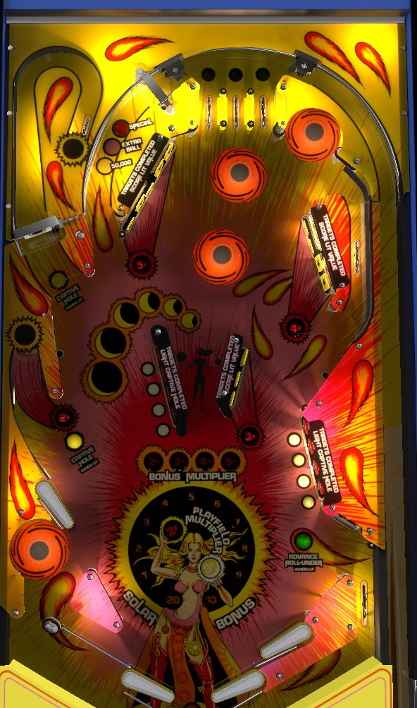

Similar playfield to Black Hole (Gottlieb, 1981). Not to be confused with Ninja Eclipse (Turner Pinball, 2024).
Eclipse is all about doing things in order. For bonus multipliers, shoot the left hole for 2x, then middle 3-bank of drop targets for 3x, then upper right drop targets for 4x, then upper left drop targets for 5x. For multiball, hit all 4 lower right standups, then lock a ball on the middle left, then complete the center standups, then lock a ball in the upper left. You must lock 2 balls and start multiball on the same turn or locks will kick out. Playfield scoring is 3x with 3 balls in play and 2x with 2 balls; in multiball, get bonus multipliers, then clear already-completed drop target banks worth 3,000 points per target.
Roll through a lit top lane to unlight it. Lit top lanes score 3,000 points; unlit lanes score 300. Unlighting all 3 lanes will relight the top lanes and also light the kicker pad target in the far lower right of the game. The kicker pad scores 1,000 points and, when lit, starts cycling the rollunder lane (just to the left of the 5-bank drop targets, which returns to the top of the table) to award 50,000 points, an extra ball, or a special. Collecting any of these awards unlights the rollunder lane.
To light lock 1, unlight all 4 of the red standup targets in the lower right. Hit a lit target to unlight it. Lit targets score 1,000 points, while unlit targets score 100. Unlighting all 4 lower right targets qualifies lock 1, which is always at the middle left saucer.
Only after locking ball 1, you can start working on lock 2 by unlighting the four targets in the bank of standup targets in the direct center of the table (the ones that face left). Unlighting those four targets qualifies lock 2 at the hook lane in the upper left. When 2 balls are locked, 3-ball multiball begins as soon as the next ball enters the playfield. During multiball, all scoring features are in play, with a 3x playfield multiplier with 3 balls in play and a 2x playfield multiplier with 2 balls in play. (The playfield multipliers in multiball may not apply to the Rollunder lane awards; I have not been able to confirm this.)
If you drain the ball at any point during the lock 1 process, your progress is saved to the next ball- this can include a partial set of lower right targets, or having lock 1 lit but not collected. Once lock 1 has been made, though, multiball is all or nothing on that turn: you either lock ball 2 and play multiball, or you drain and lock 1 is kicked back out, forcing you to start over on your next turn.
Shoot the middle left saucer to increase bonus multiplier to 2x.
After collecting 2x bonus, complete the 3-bank of drop targets in the direct center of the table (facing right) to advance to 3x bonus; these drop targets score 300 points and a bonus advance each.
After collecting 3x bonus, complete the 4-bank of drop targets in the upper right to advance to 4x bonus; these targets score 400 points and a bonus advance each.
After collecting 4x bonus, complete the upper left 5-bank of drop targets to advance to 5x bonus, with these targets scoring 500 points and a bonus advance each.
Multiplier progress is never carried over from ball to ball. Drop targets are generally the best thing to shoot for in multiball, especially if you aren't already at 5x bonus before starting multiball.
Bonus is advanced by any drop target, the right out lane, or completing the top lanes. Max bonus is 29,000 points. Base bonus is also never carried from ball to ball.
Eclipse features a table bottom vaguely similar to that of Paragon (Bally, 1978). On the left, there is one main lower flipper; behind that flipper are a pop bumper and a gap that leads the ball to the drain. Above the pop bumper is an upper flipper that should be used to send any ball far away from this beast-lair-esque area. On the right are two flippers, but it is NOT possible to scissor-drain between them. The right out lane scores 5,000 points and a bonus advance.